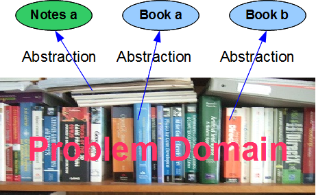
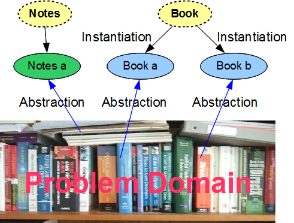
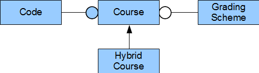
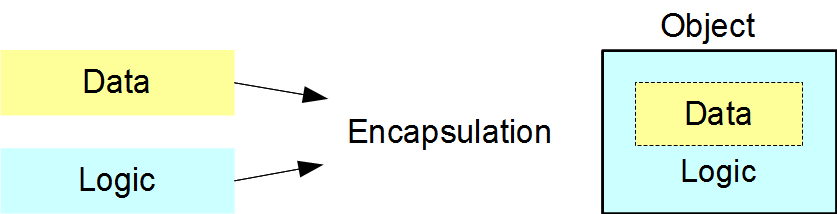
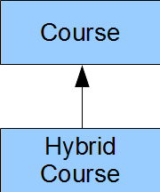
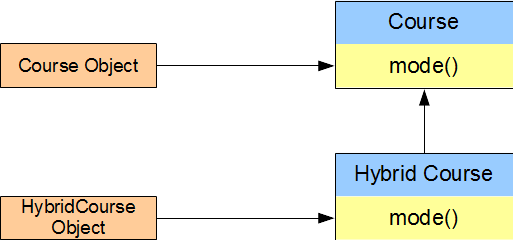
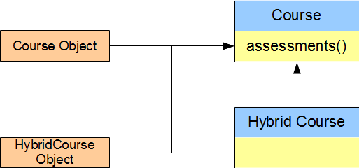

Part A - Introduction
Object Terminology
Introduce objects and classes
Introduce encapsulation, inheritance and polymorphism
"The span of absolute judgement and the span
of immediate memory impose severe limitations on the amount of
information that we are able to receive, process and
remember. By organizing the stimulus input simultaneously
into several dimensions and successively into a sequence of
chunks, we manage to break this informational bottleneck"
(Miller, 1956).
Abstraction
| Classes
| Encapsulation
| Inheritance and Polymorphism
| Summary
| Exercises
Object-oriented programming reflects the way in which
we manage day-to-day tasks. Professor Miller of Princeton
University demonstrated that most of us can only comprehend about seven
chunks of information at a time. As children, we learn to play with
small sets of chunks at an early age. As we grow, we learn to break
down the problems that we face into sets of manageable chunks.
A chunk in object-oriented programming is called an object.
The shared structure of a set of similar objects is called their class.
This shared structure includes the structure
of the data in the similar objects as well as the logic that works on that
data.
This chapter introduces the concepts of object, class,
encapsulation, inheritance and polymorphism. Subsequent chapters
elaborate on each concept in detail.
Abstraction
Programming solutions to application problems consist of components.
The process of designing these solutions involves abstraction.
In the C programming language, we abstract common code, store it in a structure
or function and refer to that structure or function from possibly multiple places
in our source code, thereby avoiding code duplication.
An object-oriented programming solution to an application problem consists of components
called objects. The process of designing an object-oriented
solution likewise involves abstraction. We distinguish the most important
features of the object, identify them publicly and hide the less important
details within the object itself.

Each object has a crisp conceptual boundary and acts in ways appropriate to itself.
Compare a book with a set of notes.
A book has pages that are bound and can be flipped. The page order is fixed.
A set of notes consists of loose pages that can be rearranged in any order. We
represent the book as an object and the set of notes as another object;
each object has a different structure.
The cout and cin objects introduced
in the preceding chapter are examples. They have different structures.
cout represents the standard output
device, which may be a monitor or a printer.
The abstraction - the standard output device - is simple and crisp.
Internally, the cout object is quite complex.
On the other hand, cin represents the standard input
device, which may be a keyboard, a tablet or a touch screen. The abstraction
- the standard input device - is also simple and crisp. Internally, the
cin object is also quite complex.
Classes
We describe the structure of similar objects in terms of their
class. Objects of the same class have the same
structure, but possibly different states. The variable types that describe
their states are identical, but generally have different values. For example,
all of the books in the figure above have a title and an author, but each book has
a different title and a different author.

We say that each object is an instance of its class.
UML
The Unified Modelling Language (UML) is a general-purpose modeling language
developed for describing systems of objects and relationships between their classes.
This language defines standard symbols for classes and their relationships.
The connectors shown in the relationship diagram below are UML connectors. We use
these symbols in this text.

The Class Diagram
The primary graphic in UML is the class diagram:
a rectangular box with three compartments:
- the upper compartment identifies the class by its name
- the middle compartment identifies the names and types of
its attributes
- the lower compartment identifies the names, return types and
parameter types of its operations
For example,
|
Code
|
number : int
title : char* |
getCode() : int
getTitle() : const char*
setCode(int) : void
setTitle(const char*) : void |
The naming conventions include:
- begin each class name with an upper case letter
- begin each member name with a lower case letter
- use camel case throughout all names - capitalize the first letter
of every word after the first word
Terminology
UML uses the terms attributes and operations. Some object-oriented
languages use different terms. Equivalent terms are:
- attributes (UML) -> fields, data members, properties, member variables
- operations (UML) -> methods (Java), procedures, messages, member functions
The C++ language standard uses the terms data members and member functions exclusively.
Encapsulation
Encapsulation is the primary concept of object-oriented programming.
It refers to the integration of data and logic within a class' implementation that
establishes the crisp interface between the implementation and any client.
Encapsulation maintains high cohesion within a class and low coupling between
the class' implementation and any one of its clients.
A class definition declares the variables and the function prototypes.
The variables store each object's data and the functions contain the logic
that operates on that data. Clients access objects through calls to
these functions without knowledge of the data stored within the objects or
the logic that manipulates that data.

Encapsulation shields the complex details of a class' implementation from
its interface; that is, its crisp external representation.
Consider the following statement from the preceding chapter:
cout << "Welcome to Object-Oriented";
|
cout refers to the standard output object.
Its class defines how to store the object's data in memory and how to control the
operations that work with that data. The <<
operator copies the string to the output object without exposing any of the
implementation details. As client programmers, we only see the interface
that manages the output process.
A well-encapsulated class hides all implementation details within itself.
The client does not see the data that the class' object stores within itself or the
logic that it uses to manage its internal data. The client only sees a clean
and simple interface to the object.
As long as the classes in a programming solution are well-encapsulated,
any programmer can upgrade the internal structure of any object developed
by another programmer without changing any client code.
Inheritance and Polymorphism
Two object-oriented concepts are prominent in our
study of the relationships between classes:
- Inheritance - one class inherits the structure of another class
- Polymorphism - a single interface provides multiple implementations
These are special cases of encapsulation in the sense of distinguishing
interface and implementation to produce highly cohesive objects
that support minimal coupling to their clients.
Inheritance
Inheritance relates classes that share the same structure.
In the Figure below, the Hybrid Course
class inherits the entire structure of the Course class
and adds some further structure.
We say that the hybrid course 'is-a-kind-of' Course and
depict the inheritance relationship using an arrow drawn from the
more specialized class to the more general class:

Inheriting one class from another allows us to utilize existing technology.
We only provide the code that implements additional structure.
Polymorphism
Polymorphism relates the implementation for an object based on its
type. In the Figure below, the HybridCourse object
involves a different mode of delivery than the Course object,
but the same assessments. Both objects belong to the same hierarchy:
both are Course objects.
A mode()
query on a Course type reports a different result than a
mode() query on a Hybrid Course type.
On the other hand, an assessments() query
on a Course type reports the same result as
on an HybridCourse type.


Polymorphic programming allows us to minimize the duplication of code amongst
objects that belong to the same inheritance hierarchy.
The Three Musketeers
Encapsulation, inheritance and polymorphism are the cornerstones of any object-oriented programming language.
Summary
- An object is a chunk of information with a crisp conceptual boundary
and a well-defined structure.
-
Objects are abstractions of the most important chunks
of information from a problem domain.
They distinguish the different feature sets in the problem domain.
- A class describes the structure common to a
set of similar objects. Each object in the set is a single instance
of its class.
- Encapsulation hides the implementation details within a class - the
internal data and internal logic are invisible to client applications that use
objects of that class.
-
We can upgrade the structure of a well-encapsulated class
without altering any client code.
-
The cornerstones of object-oriented programming are encapsulation,
inheritance and polymorphism.
Exercises
|